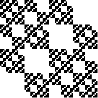

| 1. Compute the similarity dimensions of these fractals.
If you use the similarity dimension formula, list the values of N and of r.
If you use the Moran formula, list each of the scaling factors, ri.
Solve the Moran formula algebraically (quadratic formula) if possible;
otherwise solve it numerically. Present numerical solutions with two digits to
the right of the decimal.
Click each image for the solution. |
| (a) |
|
(b) |
|
(c) |
|
| |
| (d) |
|
(e) |
|
(f) |
|
| |
| (g) |
|
(h) |
|
(i) |
 |
| |
| (j) |
 |
(k) |
 |
(l) |
 |
| (m) |
|
(n) |
|
(o) |
 |
| (p) |
 |
(q) |
 |
(r) |
|
|
| |
| 2. Pictured below are the first stage images of the construction of the
gasket and the product of two Cantor sets. |
|
| (a) Sketch the first stage of the construction fo a fractal having
similarity dimension log(5)/log(3). |
| (b) Sketch the first stage of the construction fo a fractal having
similarity dimension log(5)/log(2).Here is the solution. |
| |
| 3. A self-similar fractal in the plane is made of one piece scaled by a
factor r = 1/2 and N pieces scaled by a factor r = 1/4. |
| In this problem, use the Moran formula to find an algebraic (not numerical) expression
for the dimension of these fractals. |
| (a) Find the dimension for the fractal with N = 1. |
| (b) Find the dimension for the fractal with N = 2. |
| (c) Find a general expression for the dimension for all N. Your answer
should include N. |
| (d) Find the largest possible value of N. Hint: what is the largest dimension
of a shape lying in the plane? Here is the solution. |
|
| 4. (a) What has the larger dimension, the union of a Sierpinski gasket and a
Cantor middle thirds set, or the product of two Cantor middle thirds sets?
Explain how you arrived at your answer. |
| (b) Find the smallest (integer) dimension of the space in which two Sierpinski gaskets
typically do not intersect. Hint: compute the dimension of the intersection in
dimension 2, 3, etc. Here is the solution. |
| |
| 5. Consider these three shapes |
| A = Sierpinski gasket, B = Cantor middle-thirds set, C = filled-in unit square |
| Note dim(A) = Log(3)/Log(2) = 1.585, dim(B) = Log(2)/Log(3) = 0.631, and dim(C) = 2. |
| Use the appropriate algebra of dimension formulas to compute the dimension of |
| (a) the union of A and B |
| (b) the union of B and C |
| (c) the product of A and B |
| (d) the product of B and C |
| (e) the intersection of A and C. Assume both are in 3-dimensional space. |
| (f) the intersection of B and C. Assume both are in 3-dimensional space. |
| For each calculation, state which formula you are using and show your calculations. |
| Here is the solution. |
| |
| 6. (a) Let A denote the Cantor middle-thirds set. Find a fractal (giving the
number of pieces and the scaling factors suffices) C for which the union A ∪ C has
dimension 1. Explain how you arrived at your answer. |
| (b) Let A denote the Cantor middle-thirds set situated in 3-dimensional space.
Find a fractal D for which the intersection of A and D has dimension 1, or explain why
there can be no such set. |
| (c) Let A denote the Cantor middle-thirds set. Find a fractal (giving the
number of pieces and the scaling factors suffices - this will require some
thought) B for which the product
A × B has dimension 1. Explain how you arrived at your answer. |
| Here is the solution. |
| |
| 7. Now suppose A is a Sierpinski gasket and B is a Cantor set, but not necessarily the middle-thirds
Cantor set. Both are in 2-dimensional space. We know dim(A) = Log(3)/Log(2), but about B all we know is
dim(B) < 1. |
| What is the smallest value of dim(B) for which we expect A and B to have a non-empty intersection? |
| Hint: recall that if dim(A intersect B) < 0, then typically A and B do not intersect.
If dim(A intersect B) = 0, then typically A and B intersect in isolated points.
Here is the solution. |
| |
| 8. Compute the box-counting dimension of this shape, a right isosceles
Sierpinski gasket, together with a filled-in square. |
|
| Do this first by filling in this table. Select values of r appropriate for the scaling symmetry of
the shape. |
| r = square side length | N(r) = number of squares | Log(1/r) |
Log(N(r)) |
| 1 | 2 | 0 | 0.301 |
| | | | |
| | | | |
| | | | |
| | | | |
| | | | |
|
| Plot the points. Use this information to estimate the box-counting dimension. Do the points
appear to lie along a straight line? Do different pairs of points give different slopes? |
| Modify the argument for computing the box-counting dimension of a gasket together with a line segment to find the box-counting
dimension of the shape of problem 2. Comment on the difference between this value and the calculations above.
Here is the solution. |
| |
| 9. Find the similarity dimension of a fractal that consists of 2 copies scaled by
1/2, 4 copies scaled by 1/4, and 1 copy scaled by 1/8.
Hint: Here the Moran equation is a cubic equation. Move all terms to the same side of the equation,
obtaining an expression of the form p(x) = 0, where p(x) is a cubic
polynomial. Now x + 1 is a factor of p(x). Divide p(x) by x + 1,
obtaining a quadratic polynomial. Apply the quadratic equation to that. If you've
forgotten how to divide one polynomial by another, google "dividing polynomials."
Here is the solution. |
| |
| 10. (a) Let G denote the Sierpinski gasket in the xy-plane, and let C denote the Cantor
middle-thirds set on the z-axis. Find the similarity dimension of the product
G × C. Is the dimension > 2 or < 2? |
| (b) Denote by C(r) the Cantor set consisting of N = 2 pieces, both scaled by
r. Find an expression, NOT a numerical value, of r for which G × C(r)
has dimension 2. Explain how you arrived at your answer. Hint: remember,
Log(r) = a means r = 10a.
Here is the solution. |
| 11. Suppose C is a Cantor set consisting of N = 2 pieces, each scaled by a
factor of r, and for which
dim(C × C × C) = 1. Find r.
Here is the solution. |
| 12. Suppose a fractal consists of 3 pieces scaled by 1/2, and
2 pieces scaled by 1/2i for i = 2, 3, 4, ... . |
| (a) Assuming the Moran equation can be generalized to an infinite collection of
transformations (it can) write the Moran equation to find the dimension of this fractal. |
| (b) Using the fact that |
| 1 + r + r2 + r3 + r4 + ... = 1/(1 - r) |
| so long as |r| < 1, solve the equation of part (a). Find the dimension of this
fractal. Hint: be careful to use the right solution of the quadratic equation.
Here is the solution. |